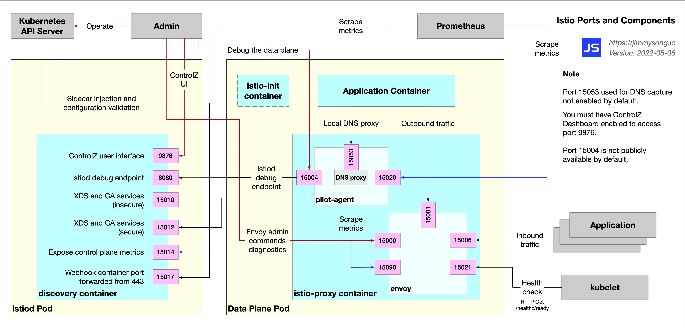
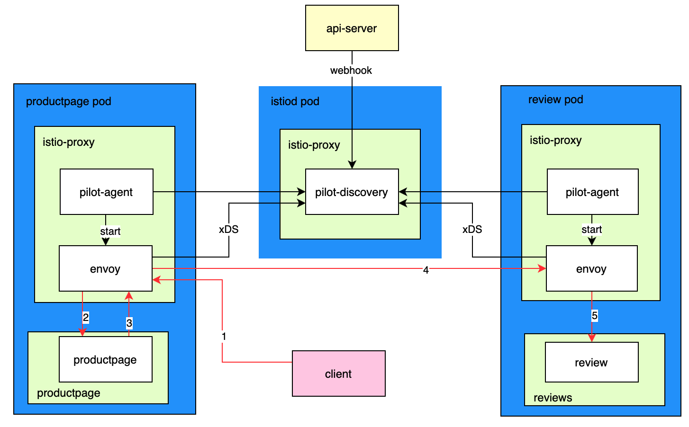

Istio 多协议、多注册中心支持调研

文章目录
问题背景
在大规模现网环境中使用 istio 等服务网格，通常会因为技术栈的不同遇到一些痛点，这里就以 istio 为例，比如：
- istio 如何对接各种外部注册中心：如 Consul、Zookeeper、Nacos 等？
- istio 如何支持除 http/gRPC/tcp 等协议之外的协议，如 Dubbo、thrift 等？
下面先介绍 istio 对这些问题支持的现状和相关的背景知识，再结合社区项目来讨论下解决方案。
问题现状
istio 注册中心现状
istio 最新版 1.16 只支持 kubernetes 的注册中心，参考 pilot-discovery 命令说明 中 registries 参数说明：
|
|
之前版本中还支持过 consul 注册中心，不过在后面中删除了，因为外部的服务注册中心将会通过 MCP-over-XDS 来支持，参考 删除 consul 注册中心提交。目前最新版本的 istio 只支持 kubernetes 的注册中心，其它注册中心通过 MCP-over-XDS 来支持。
istio 协议支持现状
参考 istio 官网的 协议选择说明，istio 目前支持的协议：
- http, http2, https
- tcp
- tls
- grpc, grpc-web
- mongo, mysql, redis（实验阶段）
而 envoy 目前支持的协议，是通过 envoy 的配置设置不同的过滤器来实现的，参考 过滤器说明，主要支持协议：
- http
- tcp
- tls
- thrift, Dubbo
- mongo, mysql, redis, kafka, rocketMQ, ZooKeeper 等等
从上面可以看到 envoy 支持的协议较多，istio 支持协议少，支持多协议的主要瓶颈在于 istio。如果不依赖第三方项目，使用除 http、grpc、tcp（实验中的 mongo、redis、mysql）外的协议，必须 使用 envoyfilter 来定制 Pilot 生成的 envoy 配置，但使用 envoy filter 手动设置 envoy 配置的主要缺点时：配置麻烦，需要根据不同协议和服务来配置多次。
envoy 配置说明和架构
之前在博客 使用 Envoy 的 OPA 插件进行鉴权 中，对 envoy 的配置字段做了简单说明，如下所示：
|
|
主要涉及以下几个概念：
- listeners：envoy 监听器，在端口上进行监听，根据设置的网络过滤器 filters 配置，使用对应的协议（如 http、tls、dubbo 等）进行处理。
- filters：网络过滤器，比如“HTTP connection manager”、“Dubbo proxy”等等。
- x_filters：协议过滤器，比如 http 网络过滤器中的协议过滤器为 http_filters，dubbo 网络过滤器的协议过滤器为 dubbo_filters。
- clusters：上游集群配置，会配置服务发现方式和负载均衡方式。
- endpoints：上游集群实际的服务地址，对应 kubernetes 是服务的 endpoints 地址。
下图为 envoy 的架构，展示了 listeners、filters、clusters、endpoints 的关系，可以看到请求处理的过程。

上面 yaml 中展示的是静态配置，envoy 可以通过文件系统或查询一个或多个管理服务器来发现它的各种动态资源，这些发现服务及其对应的 api 统称为 xDS，参考 官网 xds 协议说明，支持 v3（envoy 1.19 之后版本要使用 v3）xDS 的配置类型有：
- envoy.config.listener.v3.Listener
- envoy.config.route.v3.RouteConfiguration
- envoy.config.route.v3.ScopedRouteConfiguration
- envoy.config.route.v3.VirtualHost
- envoy.config.cluster.v3.Cluster
- envoy.config.endpoint.v3.ClusterLoadAssignment
- envoy.extensions.transport_sockets.tls.v3.Secret
- envoy.service.runtime.v3.Runtime
istio 服务发现和请求流转过程
在博客 Istio 中的各组件端口及功能详解 中，展示了 istio sidecar 各组件的端口和它们之间的交互图如下： 
在博客 Istio 流量管理实现机制深度解析 中，从 istio 系统架构、配置文件和代码对 istio 流量管理的架构和实现机制进行了分析，可以清晰看到 istio 中流量的具体流转过程。
我结合对这些文章的理解，用下面的架构图来简单说明下 istio 服务发现过程和请求流转过程，图中蓝色表示 pods，浅绿色表示 containers，白色表示里面的进程。

服务发现过程：
- 在指定命名空间开启 istio 注入，比如
kubectl label namespace default istio-injection=enabled - 创建资源的 crd，比如 bookinfo 示例下的资源，这时 kubernetes 的 webhook 机制会通知到 pilot-discovery，即 pilot-discovery 就能感知到这些资源的 services、endpoints 等
- 资源 pods 中，envoy 进程由 pilot-agent 启动，启动后 envoy 和 pilot-discovery 维持着长连接
- pilot-discovery 根据 services、endpoints 信息，生成 xDS 接口支持的 envoy 配置信息
- 当 pilot-discovery 发现有变更时，就会将更新推送给 envoy
- envoy 通过 xDS 发现服务获取到变更后，更新配置并生效，此时 envoy 就可以管理本地应用的入向和出向流量了
请求流程过程，以图中客户端请求 productpage 服务为例（省略了 gateway 和 service 相关逻辑），如红色箭头所示，具体流程为：
- 客户端请求到达 productpage pod 后，流量经过 iptables 会转到 envoy 进程
- envoy 进程，根据请求端口把请求路由到 productpage container 的应用进程 productpage
- productpage 应用进程会调用 review 服务，出向流量会被转发到 envoy 进程
- envoy 进程根据请求 host 和端口，找到 envoy 中 review cluster 配置的后端服务 pods 地址，根据负载均衡配置选择一个 pod 进行请求
- 请求到 review 的 pod 后，流量同样经过 iptables 会转到 envoy 进程，最后转发到 reviews container 的应用进程 review
- review 处理请求后，结果按原路返回，最终返回到客户端
dubbo 说明
借用 官方网站说明，Dubbo 是一款 RPC 服务开发框架，用于解决微服务架构下的服务治理与通信问题，目前 Dubbo3 已经是一站式的微服务解决方案提供：
- 基于 HTTP/2 的 Triple 协议以及面向代理 API 的编程体验。
- 强大的流量治理能力，如地址发现（如 Nacos、Zookeeper、Consul、Etcd）、负载均衡、路由选址、动态配置等。
- 多语言 SDK 实现，涵盖 Java、Golang、Javascript 等，更多语言实现将会陆续发布。
- 灵活的适配与扩展能力，可轻松与微服务体系其他组件如 Tracing、Transaction 等适配。
- Dubbo Mesh 解决方案，同时支持 Sidecar、Proxyless 等灵活的 Mesh 部署方案
Dubbo2 和 Dubbo3 区别： Dubbo2 是将接口的信息全部注册到注册中心，而一个应用实例一般会存在多个接口，这样一来注册的数据量就要大很多，而且有冗余。Dubbo3 应用级服务发现的机制是同一个应用实例仅在注册中心注册一条数据。简单来说就是，Dubbo2 是接口粒度，Dubbo3 是应用粒度，可参考 dubbo 服务发现。
解决方案探讨
以下是搜索开源项目得到的解决办法，因未进行实践，还不知道是否能满足实际使用，后续在实践中进一步验证后，再来完善实践解决方案。
对接多种注册中心问题
可行解决方案：Aeraki + Dubbo2istio 项目，Dubbo2istio 将 Dubbo 服务注册表中的 Dubbo 服务自动同步到 Istio 服务网格中，目前已经支持 ZooKeeper，Nacos 和 Etcd，参考：
支持多种协议问题
可行解决方案：Aeraki + MetaProtocol Proxy，Aeraki 将规则转化为 envoy 代理配置并下发，MetaProtocol Proxy 中已经支持了 Dubbo， Thrift ，bRPC 和一系列私有协议。如果使用闭源的专有协议，只需编写一个 MetaProtocol 编解码器即可支持，可参考 aeraki github 说明 进行使用。
参考
文章作者 yefengzhichen
上次更新 2023-01-11